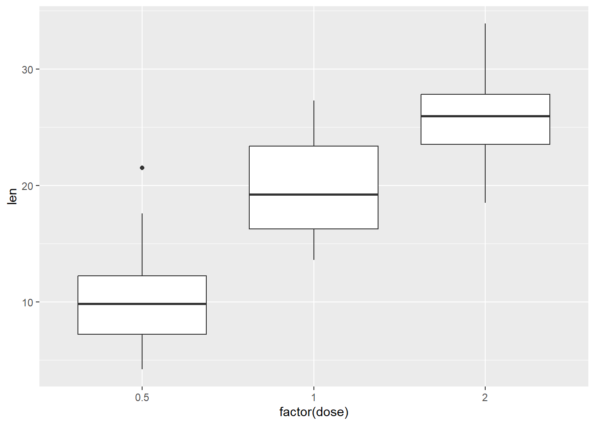
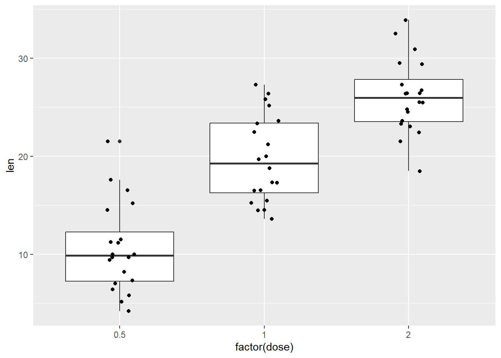
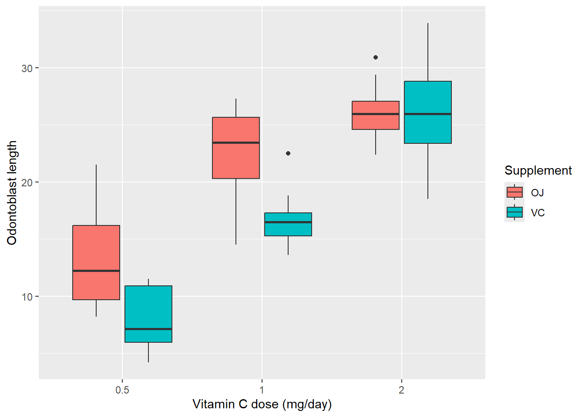

getwd() # Tells you which folder is your working directory
list.files() # Lists all the files in the working directoryGuide to R 02: Projects, importing data and a first plot
R for Biomedical Science · Leeds Beckett University
NoteHow to use this guide
This guide is your reference for week 1, session 2. It covers how R finds files, how to set up the project folder you will use for the rest of the module, how to load packages, and how to import, check and plot a dataset using the tidyverse, the family of packages we use throughout the module. Every piece of output shown here was produced by running the code when this page was built.
Where R looks for files: the working directory
R reads files from, and saves files to, a particular folder known as the working directory. When you write read_csv("Dataset.csv"), R looks for Dataset.csv in the working directory and nowhere else. To find out what your working directory is, or to list the files in it, run:
You may see code online that changes the working directory with setwd():
setwd("C:/Path/to/Working_Directory/Folder") # Avoid this in your own codesetwd() works, but the path inside it only exists on the computer it was written on. A script that uses it breaks as soon as you move it, share it with someone, or open it on a university PC. RStudio Projects solve this problem.
RStudio Projects
An RStudio Project is simply a folder with a small .Rproj file inside it. When you open a project, RStudio sets the working directory to the project folder for you. That means every path in your code can be written relative to the project folder, and the same code works on any computer the folder is copied to.
Creating a project
- Go to File › New Project › New Directory › New Project.
- Give the directory a name (for this module,
R_module) and choose where to create it: somewhere you will find again and that is backed up, such as your university OneDrive. - Click Create Project. RStudio restarts inside the new project, and the project’s name appears at the top right of the window.
To come back to the project later, double-click the .Rproj file, or use File › Recent Projects.
Organising the project folder
For this module, keep your workbooks in the top level of the project folder and data in a subfolder called data:
R_module/
├── R_module.Rproj
├── week-01-session-1-workbook.qmd
├── week-01-session-2-workbook.qmd
└── data/
└── Dataset.csvWith this layout, the path from the project folder to the data file is data/Dataset.csv. Code in a Quarto document runs from the folder the document is saved in, which here is also the project folder, so the same path works in your workbook and in the Console.
Managing files in the files pane
The Files pane shows the contents of the project folder, and you can use it like a file explorer:
| Action | How to perform it |
|---|---|
| Create a new script | Click “New Blank File” → select “R Script”. |
| Create a new folder | Click “New Folder”, enter a name. |
| Rename a file | Select file → click “Rename”. |
| Delete a file | Select file → click “Delete”. |
| Refresh the view | Click the refresh button, top right. |
| Go back to the working directory | Click More › Go To Working Directory. |
Packages and the tidyverse
R on its own (“base R”) can do a great deal, but much of its power comes from packages: collections of functions that other people have written and shared. In this module we use the tidyverse, a family of packages designed to work together for importing, tidying, transforming and plotting data. It includes readr (importing), dplyr (choosing and changing rows and columns) and ggplot2 (plots).
Using a package takes two steps, and the difference between them causes a lot of confusion:
| Step | Code | How often |
|---|---|---|
| Install the package: download it onto the computer | install.packages("tidyverse") |
Once per computer (and again after updating R). Type it in the Console, not in a script or workbook. |
| Load the package: make its functions available in this session | library(tidyverse) |
Every session. Put it at the top of every script and workbook. |
On university computers the tidyverse may already be installed; check the Packages pane, or just try library(tidyverse) and see whether you get an error.
library(tidyverse)── Attaching core tidyverse packages ──────────────────────── tidyverse 2.0.0 ──
✔ dplyr 1.2.1 ✔ readr 2.2.0
✔ forcats 1.0.1 ✔ stringr 1.6.0
✔ ggplot2 4.0.3 ✔ tibble 3.3.1
✔ lubridate 1.9.5 ✔ tidyr 1.3.2
✔ purrr 1.2.2
── Conflicts ────────────────────────────────────────── tidyverse_conflicts() ──
✖ dplyr::filter() masks stats::filter()
✖ dplyr::lag() masks stats::lag()
ℹ Use the conflicted package (<http://conflicted.r-lib.org/>) to force all conflicts to become errorsThe message lists the packages that have been loaded, followed by any conflicts. A conflict means two loaded packages contain a function with the same name. Here, dplyr has its own filter() and lag() functions, which now take priority over the ones of the same name in base R’s stats package. That is what we want, so you can ignore the message. If you ever need a specific package’s version of a function, write the package name and two colons in front of it, e.g. stats::filter().
Organising data in Excel for importing into RStudio
Before analysing data in R, it is essential to structure it properly in Excel (or other spreadsheet software like Google Sheets). Poorly formatted data can cause errors when importing into R, so taking the time to organise it correctly will save time and effort later.
Basic rules for structuring data in Excel
To ensure a smooth import into R, follow these best practices when organising your dataset in Excel:
- Use a clear table structure – Each row represents an observation, and each column represents a variable.
- Include column headers – The first row should contain variable names (e.g., “Name”, “Age”, “Score”).
- Avoid merging cells – Every cell should contain a single value without merging across rows or columns.
- Do not leave blank rows or columns – Empty spaces can disrupt R’s ability to read data correctly.
- Be consistent with data types – A column should contain only one type of data (e.g., numbers, text, or dates).
- Avoid special characters or spaces in column names – Stick to letters, numbers, and underscores (e.g.,
Customer_IDinstead ofCustomer ID!).
Example of a well-formatted dataset in Excel
A correctly structured dataset should look something like this:
| ID | Name | Age | Score | Date_Joined |
|---|---|---|---|---|
| 1 | Alice | 25 | 90 | 2024-01-05 |
| 2 | Bob | 24 | 85 | 2023-11-21 |
| 3 | Charlie | 23 | 88 | 2022-05-15 |
Why this works well:
- Each column has a clear name.
- No spaces or special characters in column titles.
- All data types are consistent within each column (e.g., numbers in the “Age” column, text in “Name”, and dates in “Date_Joined”).
- No merged cells or unnecessary formatting.
Saving the Excel file for R
Once the dataset is formatted correctly, save it in a format that R can easily read. The most common format for R is CSV (Comma-Separated Values).
Steps to save as CSV:
- Click File > Save As.
- Choose CSV (Comma delimited) (*.csv) as the file type.
- Click Save.
CSV files are plain text, making them easier for R to read. Unlike .xlsx files, CSVs do not contain extra formatting, reducing potential import issues. CSV files are also compatible with most data analysis tools.
Importing a CSV file
The examples below use the file Dataset.csv, a small, deliberately messy COVID-related dataset. Opened as plain text, this is what it contains:
Patient_ID,Age,Sex,CRP_mg.L,WBC_Count_10^9.L,COVID_Result,FollowUp_Required
P001,45,M,12.5,8.4,Positive,Yes
P002,38,F,8.1,7.2,positive,Y
P003,52,male,NA,6.9,NEG,No
P004,29,Female,5.3,NA,"""negative""",n
P005,NA,M,High,10.2,Pos,TWe import it with read_csv() from the readr package, giving the path from the project folder to the file, and store the result in an object called patients:
patients <- read_csv("data/Dataset.csv")Rows: 5 Columns: 7
── Column specification ────────────────────────────────────────────────────────
Delimiter: ","
chr (5): Patient_ID, Sex, CRP_mg.L, COVID_Result, FollowUp_Required
dbl (2): Age, WBC_Count_10^9.L
ℹ Use `spec()` to retrieve the full column specification for this data.
ℹ Specify the column types or set `show_col_types = FALSE` to quiet this message.Read this message. It tells you how many rows and columns were imported and what type of data R decided each column holds: chr (character, i.e. text) or dbl (double, i.e. a number). Already there is a warning sign. CRP_mg.L should hold numbers, but R has read it as text. We’ll see why, and fix it, below.
If you need a file that isn’t in your project, you can give a full path instead. On Windows, copy the path from File Explorer and change every \ to /, because R treats \ as a special character. But a path like this only works on your own computer, which is why we keep data inside the project.
patients <- read_csv("C:/Users/yourname/Documents/Dataset.csv")
Note
read_csv() and read.csv()
In other people’s code you will often see read.csv(), with a full stop. That is base R’s version. It works, but read_csv() is faster, tells you what type it has given each column, keeps column names exactly as they are in the file, and creates a tibble (see below). Use read_csv() in this module.
Checking what you have imported
After importing a dataset, the first thing to do is check its structure, to understand the types of variables and detect any issues. Three functions do most of the work:
glimpse(patients) # One line per column: its type and its first few valuesRows: 5
Columns: 7
$ Patient_ID <chr> "P001", "P002", "P003", "P004", "P005"
$ Age <dbl> 45, 38, 52, 29, NA
$ Sex <chr> "M", "F", "male", "Female", "M"
$ CRP_mg.L <chr> "12.5", "8.1", NA, "5.3", "High"
$ `WBC_Count_10^9.L` <dbl> 8.4, 7.2, 6.9, NA, 10.2
$ COVID_Result <chr> "Positive", "positive", "NEG", "\"negative\"", "Pos"
$ FollowUp_Required <chr> "Yes", "Y", "No", "n", "T"head(patients) # The first few rows, as a table# A tibble: 5 × 7
Patient_ID Age Sex CRP_mg.L `WBC_Count_10^9.L` COVID_Result
<chr> <dbl> <chr> <chr> <dbl> <chr>
1 P001 45 M 12.5 8.4 "Positive"
2 P002 38 F 8.1 7.2 "positive"
3 P003 52 male <NA> 6.9 "NEG"
4 P004 29 Female 5.3 NA "\"negative\""
5 P005 NA M High 10.2 "Pos"
# ℹ 1 more variable: FollowUp_Required <chr>summary(patients) # Summary statistics for each column Patient_ID Age Sex CRP_mg.L WBC_Count_10^9.L
Length :5 Min. :29.00 Length :5 Length :5 Min. : 6.900
N.unique :5 1st Qu.:35.75 N.unique :4 N.unique :4 1st Qu.: 7.125
N.blank :0 Median :41.50 N.blank :0 N.blank :0 Median : 7.800
Min.nchar:4 Mean :41.00 Min.nchar:1 Min.nchar:3 Mean : 8.175
Max.nchar:4 3rd Qu.:46.75 Max.nchar:6 Max.nchar:4 3rd Qu.: 8.850
Max. :52.00 NAs :1 Max. :10.200
NAs :1 NAs :1
COVID_Result FollowUp_Required
Length : 5 Length :5
N.unique : 5 N.unique :5
N.blank : 0 N.blank :0
Min.nchar: 3 Min.nchar:1
Max.nchar:10 Max.nchar:3
When beginning any data analysis in R, functions like glimpse(), head() and summary() serve as foundational quality checks. They are not just for familiarising yourself with the dataset, but to systematically verify that the data is structured correctly, contains appropriate variable types, and has no obvious flaws that would compromise downstream analysis.
head() gives a quick preview of the first rows of the dataset. This is an immediate way to confirm that the data has been imported correctly: column names should match expectations, each row should represent an individual observation, and the values should appear sensible at a glance. If there are shifted headers or corrupted entries, this will become obvious immediately.
glimpse() provides more technical insight into the internal structure of the dataset. Specifically, it reveals the data type of each variable, as well as the number of observations and columns. (Base R’s str() does the same job, and you will see it in older code.) This is important because many statistical procedures in R require variables to be of specific types. For example, logistic regression expects the outcome variable to be a factor rather than a character string, and plotting functions behave differently depending on whether a variable is treated as categorical or continuous. In the output above, CRP_mg.L is <chr> because one entry is the word “High”, and a single piece of text is enough to make R read the whole column as text.
summary() gives a statistical overview of each variable. For numeric variables, it returns the minimum, maximum, mean, median, and quartiles, allowing you to spot skewed distributions, extreme values, or potentially erroneous data points (e.g., a blood pressure reading of 400 mmHg). The presence of missing values (NA's) is also evident in this output. Notice that for CRP_mg.L it can only report that the column is character: there are no numbers to summarise.
Together, these three commands act as a diagnostic triad. Skipping these checks risks proceeding with poorly structured or corrupted data, potentially leading to flawed or invalid results. The start-up and troubleshooting guide lists the full set of checks to run at the start of every analysis.
Column names that break R’s naming rules
One column is called WBC_Count_10^9.L. The ^ isn’t allowed in an R name, so whenever you refer to this column you must wrap its name in backticks (`), which you can see glimpse() doing above. It is usually easier to rename it, which you’ll do with rename() once you’ve met the pipe below.
Data frames and tibbles
A data frame is R’s version of a table: each column is a vector (so everything in a column has the same type), and each row is one observation. The tidyverse uses a modern version of the data frame called a tibble, which prints more neatly and is a little stricter about mistakes. You can treat the two words as meaning the same thing.
You can also build a tibble yourself, column by column:
students <- tibble(
Name = c("Alice", "Bob", "Charlie"), # First column (character vector)
Age = c(25, 24, 23), # Second column (numeric vector)
Score = c(90, 85, 88) # Third column (numeric vector)
)
students# A tibble: 3 × 3
Name Age Score
<chr> <dbl> <dbl>
1 Alice 25 90
2 Bob 24 85
3 Charlie 23 88| Code | Explanation |
|---|---|
students <- |
Creates a new object called students to store the tibble. |
tibble(...) |
This function creates a tibble, a table-like structure where each column can be a different type. |
Name = c("Alice", "Bob", "Charlie") |
The first column. It’s a character vector with the names of three students. |
Age = c(25, 24, 23) |
The second column. It’s a numeric vector representing the students’ ages. |
Score = c(90, 85, 88) |
The third column. Another numeric vector, this time showing scores or marks for each student. |
In other people’s code you’ll also see a single column pulled out with $, which gives you that column as a vector:
students$Score[1] 90 85 88The pipe, |>
Most tidyverse code is written as a series of steps joined by the pipe, |>. The pipe takes whatever is on its left and passes it to the function on its right as the first argument. You can read it as “and then”.
students |> filter(Score > 86)# A tibble: 2 × 3
Name Age Score
<chr> <dbl> <dbl>
1 Alice 25 90
2 Charlie 23 88This reads: “take students, and then keep the rows where Score is greater than 86”. It does exactly the same as filter(students, Score > 86), but once you chain several steps together, the piped version is much easier to read from top to bottom. The keyboard shortcut is Ctrl + Shift + M (Cmd + Shift + M on a Mac).
Tip
|> and %>%
In older code and online examples you’ll see %>% instead of |>. It comes from the magrittr package and does almost exactly the same job. If Ctrl + Shift + M gives you %>%, tick Use native pipe operator in Tools › Global Options › Code.
Choosing rows and columns with dplyr
Five dplyr functions cover most of what you need to do with a table. Each takes a tibble and gives back a new tibble, so they can be chained with the pipe.
| Function | What it does | Example |
|---|---|---|
select() |
Keeps (or drops) columns | select(Name, Score) |
filter() |
Keeps rows that meet a condition | filter(Age < 25) |
arrange() |
Sorts rows | arrange(desc(Score)) |
mutate() |
Creates a new column, or changes an existing one | mutate(Age_months = Age * 12) |
summarise() |
Reduces many rows to a single summary row | summarise(mean_score = mean(Score)) |
students |> select(Name, Score)# A tibble: 3 × 2
Name Score
<chr> <dbl>
1 Alice 90
2 Bob 85
3 Charlie 88students |> arrange(desc(Score))# A tibble: 3 × 3
Name Age Score
<chr> <dbl> <dbl>
1 Alice 25 90
2 Charlie 23 88
3 Bob 24 85students |> mutate(Age_months = Age * 12)# A tibble: 3 × 4
Name Age Score Age_months
<chr> <dbl> <dbl> <dbl>
1 Alice 25 90 300
2 Bob 24 85 288
3 Charlie 23 88 276students |> summarise(mean_score = mean(Score))# A tibble: 1 × 1
mean_score
<dbl>
1 87.7Conditions inside filter() use the same comparison operators you met with vectors:
==equal to (two equals signs: a single=is for naming arguments);!=not equal to;>,>=,<,<=greater than, at least, less than, at most;%in%matches any value in a list, e.g.Name %in% c("Alice", "Bob");&and,|or,!not, for combining conditions; andis.na()is missing.
None of these functions changes the original tibble. To keep the result, assign it to a name:
high_scores <- students |> filter(Score > 86)And here is the renaming promised above, using the patients data:
patients <- patients |> rename(WBC = `WBC_Count_10^9.L`)
names(patients)[1] "Patient_ID" "Age" "Sex"
[4] "CRP_mg.L" "WBC" "COVID_Result"
[7] "FollowUp_Required"When numbers are stored as text
Here is why checking types matters. Suppose we want the patients whose CRP is above 10 mg/L:
patients |> filter(CRP_mg.L > 10)# A tibble: 4 × 7
Patient_ID Age Sex CRP_mg.L WBC COVID_Result FollowUp_Required
<chr> <dbl> <chr> <chr> <dbl> <chr> <chr>
1 P001 45 M 12.5 8.4 "Positive" Yes
2 P002 38 F 8.1 7.2 "positive" Y
3 P004 29 Female 5.3 NA "\"negative\"" n
4 P005 NA M High 10.2 "Pos" T R returns four patients, including CRP values of 8.1 and 5.3, and the word “High”. It hasn’t given an error or a warning, just a wrong answer. Because CRP_mg.L is text, R compares it as text, alphabetically and character by character: “8.1” comes after “10” because “8” comes after “1”, so it counts as “greater”.
The fix is to convert the column to numbers with mutate() and as.numeric():
patients <- patients |> mutate(CRP_mg.L = as.numeric(CRP_mg.L))Warning: There was 1 warning in `mutate()`.
ℹ In argument: `CRP_mg.L = as.numeric(CRP_mg.L)`.
Caused by warning:
! NAs introduced by coercionpatients |> filter(CRP_mg.L > 10)# A tibble: 1 × 7
Patient_ID Age Sex CRP_mg.L WBC COVID_Result FollowUp_Required
<chr> <dbl> <chr> <dbl> <dbl> <chr> <chr>
1 P001 45 M 12.5 8.4 Positive Yes R warns that some values became NA: “High” can’t be turned into a number. That warning is useful. Whether “High” should become a missing value, or something else, is a decision about your data, and one you should record in your write-up. Next week you’ll meet more of these cleaning decisions.
A first plot with ggplot2
ggplot2 builds a plot in layers, from three ingredients:
- the data, a tibble or data frame;
- the aesthetic mappings,
aes(), which say which columns go on which axis (and, later, which control colour, fill and so on); and - one or more geoms, the shapes that represent the data: points, boxes, bars, lines.
Layers are added with +.
To have enough data for an interesting plot, we’ll use ToothGrowth, a dataset that comes with R. It records the length of odontoblasts (the cells responsible for tooth growth) in 60 guinea pigs, each of which received one of three doses of vitamin C (0.5, 1 or 2 mg/day) by one of two methods: orange juice (OJ) or ascorbic acid (VC).
glimpse(ToothGrowth)Rows: 60
Columns: 3
$ len <dbl> 4.2, 11.5, 7.3, 5.8, 6.4, 10.0, 11.2, 11.2, 5.2, 7.0, 16.5, 16.5,…
$ supp <fct> VC, VC, VC, VC, VC, VC, VC, VC, VC, VC, VC, VC, VC, VC, VC, VC, V…
$ dose <dbl> 0.5, 0.5, 0.5, 0.5, 0.5, 0.5, 0.5, 0.5, 0.5, 0.5, 1.0, 1.0, 1.0, …ggplot(ToothGrowth, aes(x = factor(dose), y = len)) +
geom_boxplot()
factor(dose) tells ggplot to treat the three doses as separate groups rather than as points on a number line. Adding a second geom shows the individual animals on top of the boxes:
ggplot(ToothGrowth, aes(x = factor(dose), y = len)) +
geom_boxplot() +
geom_jitter(width = 0.1)
Mapping a third column to fill splits each dose by supplement type, and labs() gives the plot proper labels:
ggplot(ToothGrowth, aes(x = factor(dose), y = len, fill = supp)) +
geom_boxplot() +
labs(
x = "Vitamin C dose (mg/day)",
y = "Odontoblast length",
fill = "Supplement"
)
Tooth growth increases with dose, and at the two lower doses orange juice seems to produce longer odontoblasts than ascorbic acid. Whether those differences are bigger than chance would produce is a question for week 4, when you meet ANOVA.
Warning
+ not |>
The layers of a ggplot are joined with +, not with the pipe. Using |> between ggplot() and geom_boxplot() is one of the most common beginner errors, and ggplot’s error message will usually suggest the fix.
Saving your work
To save a plot, run ggsave() straight after making it. To save a tibble as a CSV file, use write_csv(). In both cases the path is relative to the project folder; create a figures folder in the Files pane first if you use the one below.
ggsave("figures/toothgrowth.png", width = 6, height = 4) # Saves the last plot you made
write_csv(patients, "data/patients_checked.csv") # row names are never added, unlike write.csv()Summary
| Task | Code |
|---|---|
| Load the tidyverse (every session) | library(tidyverse) |
| Import a CSV file | read_csv("data/file.csv") |
| Check structure and types | glimpse(data) |
| Look at the first rows | head(data) |
| Summarise every column | summary(data) |
| Pass a result on to the next step | |> (“and then”) |
| Keep columns / rows | select() / filter() |
| Sort / create or change a column | arrange() / mutate() |
| Rename a column | rename(new_name = old_name) |
| Make a plot | ggplot(data, aes(x = ..., y = ...)) + geom_...() |
| Save a plot / a tibble | ggsave() / write_csv() |